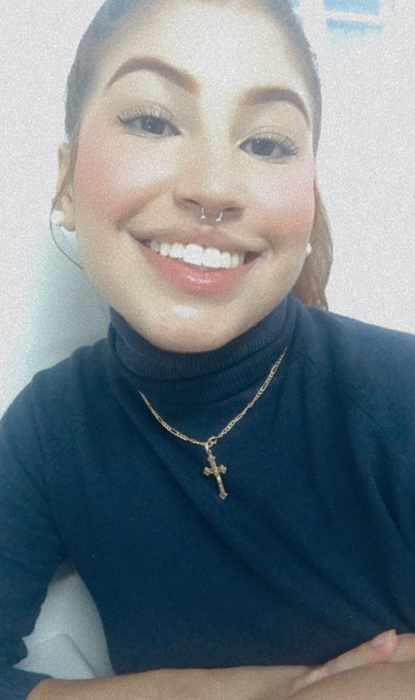

----------Minha Página Pessoal---------

-----------Perfil Profissional--------------
Formada em Informática pelo Instituto federal do Paraná
(2017/2021) >>>> Programadora júnior <<<<
JavaScript
Typescript
HTML/CSS
React Native
Node.js
PHP
Java
---------------Experiências-----------------
Bar e bistrô/ Abril 2022 - outubro 2022.
Atuava na recepção dos clientes, organização de entrada/
saída, e também reservas.
Academia Fitspace/ Setembro 2021 - Janeiro 2022.
Atuava tanto na recepção como na área de vendas,
organização das turmas, novos horários, fichas dos
alunos e negociações.
Lidercar multimarcas/ Abril 2021 - Agosto 2021.
Atuava na organização das planilhas de entrada e saída
de carros, agendamento para avaliação via telefone e
whatsapp.
Technave / Fevereiro 2017 - Agosto 2017.
Atuava na organização de documentos, planilhas,
agendas, e-mails e ligações.
---------------Fomação-----------------------
Cursando a graduação em Análise e
desenvolvimento de sistemas, na Universidade
Positivo - Câmpus Osório - 2022 - 2024.
Instituto Federal do Paraná - Campus Paranaguá - Médio
Técnico em Informática - 2017/2021.
--------------Habilidades---------------------
Relações interpessoais.
Pró atividade
Comunicação
Facilidade de adaptação em diversos ambientes de trabalho
Facilidade em trabalhos em equipe
Anseio por novos aprendizados e qualificações
----------Atividades complementares-----
Inglês intermediário/Espahol básico - Cebrac cursos
Conhecimentos computacionais
Pacote Office/Excel/Word/Power point/Canva
---------------Contatos-----------------------
Email: Freitasgabrielanasilva061325@gmail.com
Telefone: 41 9(8433-4912)